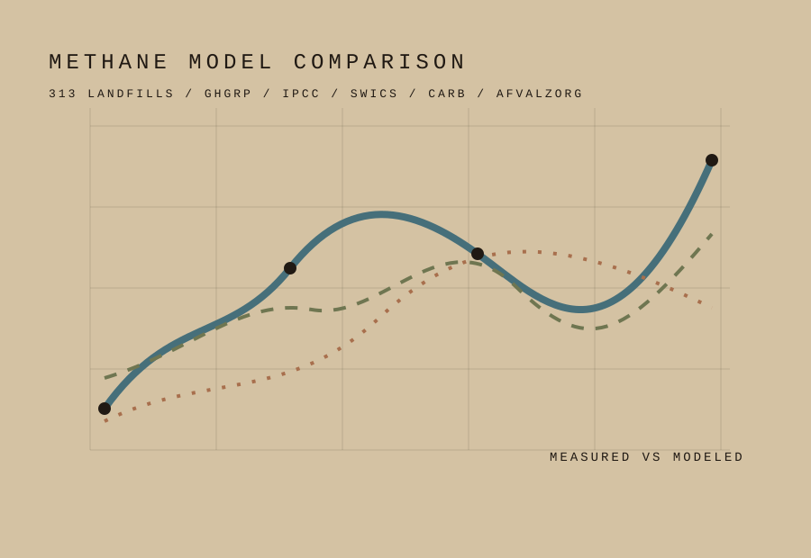
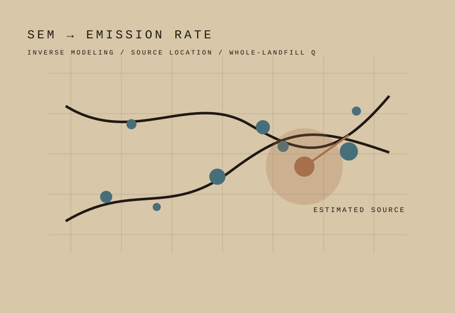
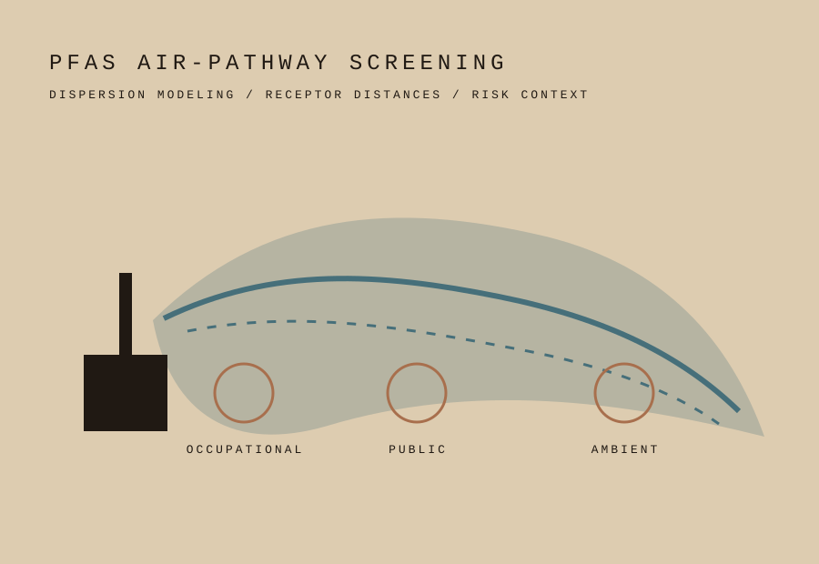
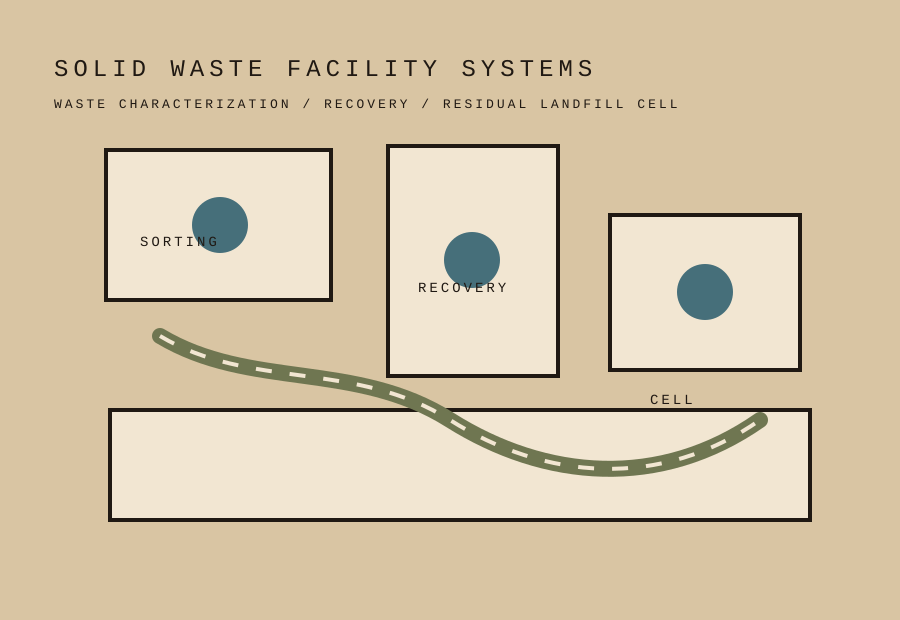

02
Meshach Ando
Environmental + Solid Waste
Landfills. Methane. PFAS. GIS. Atmospheric Modeling.
Municipal solid waste systems, methane emissions, PFAS screening, and landfill performance.
Selected Environmental Projects
Solid waste, air, and exposure questions treated as engineered systems.
01
Landfill Methane Model Comparison
313 MSW landfills | 42 states | GHGRP, IPCC, SWICS, CARB, Dutch Afvalzorg
Compared state-of-practice landfill emissions models against direct methane measurements from municipal solid waste landfills across the United States.
Python | ArcGIS Pro | Statistical Analysis | Environmental Data Analytics

Measured methane emissions vs inventory models
02
SEM-to-Emission-Rate Inverse Modeling
SEM | Genetic algorithms | Surface flux inference
Developed a Python-based inverse modeling framework for estimating whole-landfill methane emission rates and source locations from SEM datasets.
Python | Inverse modeling | SEM datasets | Source-location estimation

SEM observations to whole-landfill emission rate
03
PFAS Dispersion and Exposure Screening
Air pathway | Screening risk | Spatial receptors
Assessed PFAS exposure risks around municipal solid waste landfills at occupational, public health, and ambient receptor distances.
Gaussian Dispersion | Monte Carlo | GIS

PFAS dispersion + receptor risk screening
04
Composting / Recycling Plant Engineering Experience
Waste characterization | Sorting efficiency | Residual landfill operations
Conducted sampling and sorting waste characterization studies, analyzed generation and recovery data, and supported evaluation of a 215 m x 250 m engineered residual solid waste landfill cell.
MSW operations | Waste characterization | Landfill cell evaluation

Waste characterization + recovery system performance
Landfill + Methane Work
Quantitative methane work grounded in waste-system behavior.
Model comparison across GHGRP, IPCC, SWICS, CARB, and Dutch Afvalzorg landfill emissions models.
Python-based SEM inverse modeling for whole-landfill methane emission-rate estimation.
Research spanning fugitive methane, landfill cover systems, drainage, moisture, and gas attenuation.
PFAS / Risk Screening
Screening-level methods for atmospheric transport and exposure questions.
PFAS exposure-risk screening around MSW landfills for occupational, public health, and ambient receptor distances.
Dispersion modeling to estimate volatile PFAS concentrations and exposure conditions.
Risk framing connected to landfill cover attenuation research and environmental systems modeling.
Relevant Experience
Environmental engineering with a strong analytical spine.
2+ years in municipal solid waste management, landfill engineering, and environmental systems modeling.
Staff engineering experience at Kumasi Compost and Recycling Plant with waste characterization, recycling behavior modeling, and landfill operations.
FE Civil passed; PE Civil Water Resources and Environmental exam scheduled for June 23, 2026.
Research Highlights
Methane emissions modeling
SEM inverse modeling
PFAS atmospheric dispersion
Landfill drainage and moisture modeling
View Full Research Portfolio